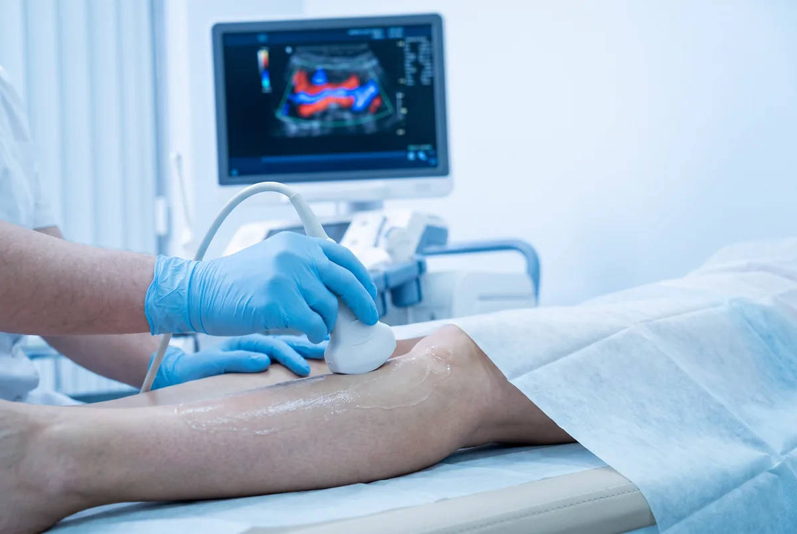

Dr. Marcelo Márquez Cruz · Mérida
Ultrasonido Doppler Vascular
Doppler de piernas: sin ayuno, ropa de dos piezas. Doppler hepático: suele requerir ayuno 4–6 h. Testicular: sin ayuno; trae pequeña toalla. Ver preparación.
El ultrasonido Doppler aprovecha el efecto Doppler para medir la velocidad, dirección y calidad del flujo sanguíneo en arterias y venas en tiempo real. A diferencia de otros estudios, no utiliza radiación, es completamente no invasivo y permite evaluar la circulación en cualquier parte del cuerpo. Es el estudio de primera elección para diagnosticar trombosis venosa profunda (TVP), insuficiencia venosa crónica, várices, obstrucciones arteriales y arteriosclerosis.
El Doppler venoso de miembros inferiores es el estudio más solicitado. Detecta coágulos (trombos) en las venas profundas de la pierna, una condición potencialmente grave ya que puede derivar en una embolia pulmonar. También evalúa la insuficiencia venosa crónica y es el estudio preoperatorio obligatorio antes de una cirugía de várices. El Doppler arterial de extremidades detecta enfermedad arterial periférica (EAP), que se manifiesta como dolor al caminar, pie frío o heridas que no cicatrizan, y es especialmente importante en pacientes diabéticos (pie diabético).
El Doppler carotídeo es uno de los estudios preventivos más importantes disponibles. Evalúa el grado de estrechamiento (estenosis) de las arterias carótidas, que son las principales arterias que irrigan el cerebro. Una estenosis significativa es uno de los principales factores de riesgo para accidente cerebrovascular (ACV o derrame cerebral). Se recomienda en pacientes con hipertensión, diabetes, tabaquismo, colesterol elevado o antecedentes familiares de EVC. El Doppler testicular es el estudio de urgencia ante dolor testicular agudo para descartar torsión testicular, y también evalúa varicocele, epididimitis y orquitis.
Indicaciones para este estudio
¿Cuándo solicitar un ultrasonido Doppler vascular?
- Sospecha de trombosis venosa profunda (TVP): pierna hinchada, roja y dolorosa
- Várices o insuficiencia venosa crónica en miembros inferiores
- Sospecha de estenosis carotídea: mareos, pérdida transitoria de visión, AIT
- Evaluación de aneurisma de aorta abdominal
- Pie diabético: evaluación de perfusión arterial
- Seguimiento post-cirugía vascular o colocación de stent
- Torsión testicular (urgencia): dolor escrotal agudo
- Hipertensión arterial de difícil control (Doppler renal)
Preparación: Para Doppler de miembros inferiores no se requiere preparación especial. Para Doppler abdominal (renal, hepático, aorta) se recomienda ayuno de 4-6 horas. Acudir con ropa cómoda.
- Doppler venoso / vascular de miembros inferiores (TVP, várices)
- Doppler hepático
- Doppler arterial de extremidades
- Doppler de carótidas (riesgo de ACV)
- Doppler testicular (varicocele)
- Doppler obstétrico

Preguntas frecuentes
¿Qué es el Doppler carotídeo?
¿Cuándo hacerse Doppler por várices?
¿Detecta trombosis venosa profunda (TVP)?
¿Cuándo es urgente el Doppler testicular?
¿Requiere preparación el Doppler?
Más respuestas en preguntas frecuentes.
Contacto
Agenda tu ultrasonido
Atención en Ultrasonido Biogamma, Mérida, Yucatán. Resultados el mismo día.